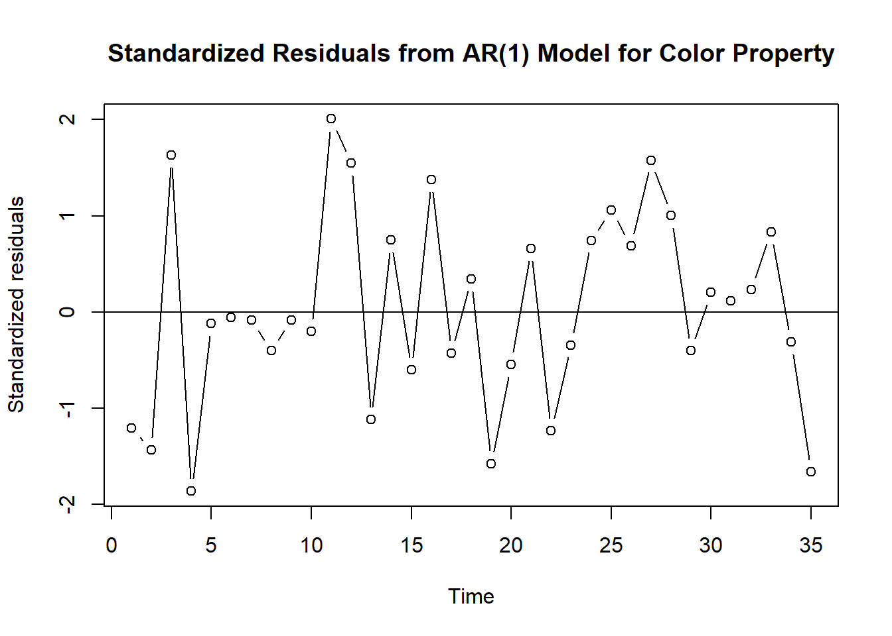
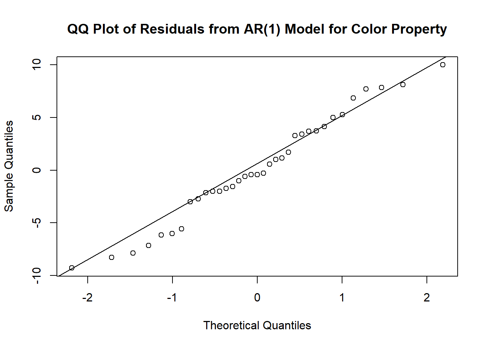
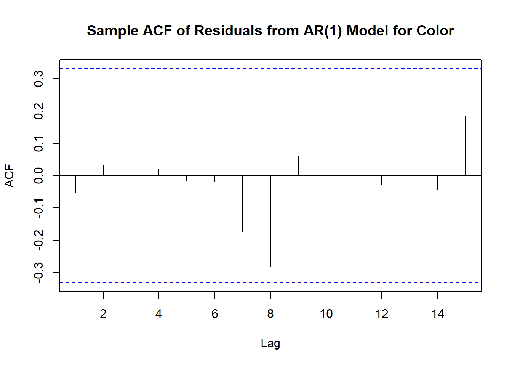
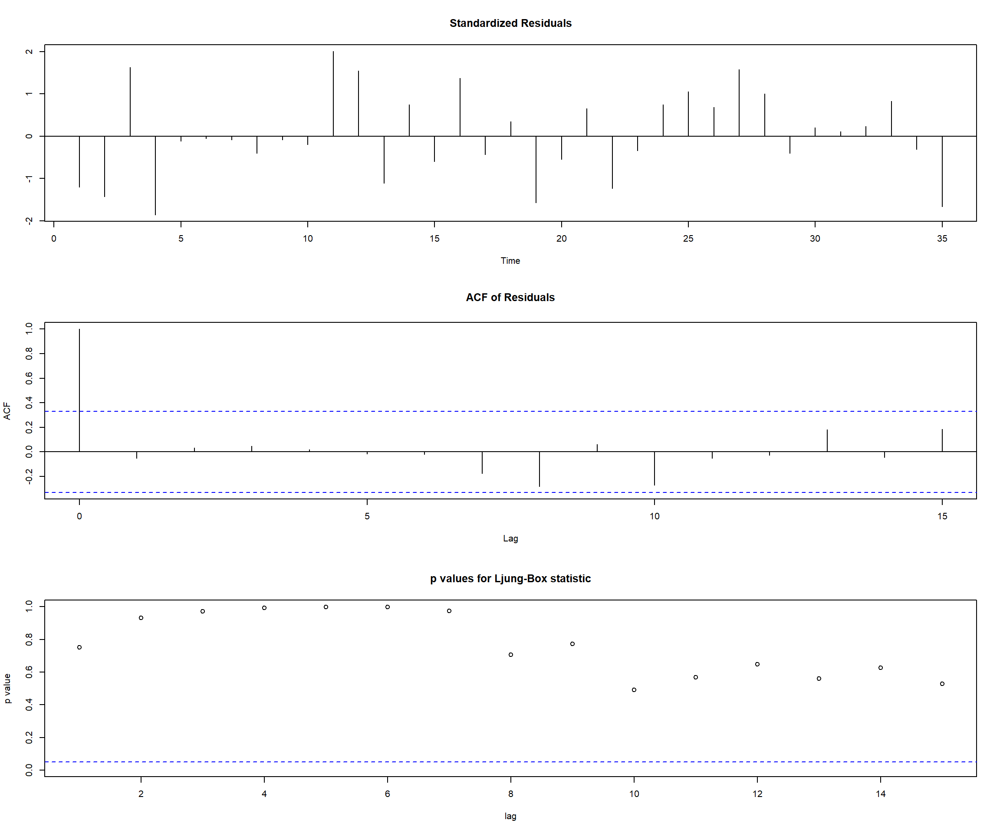
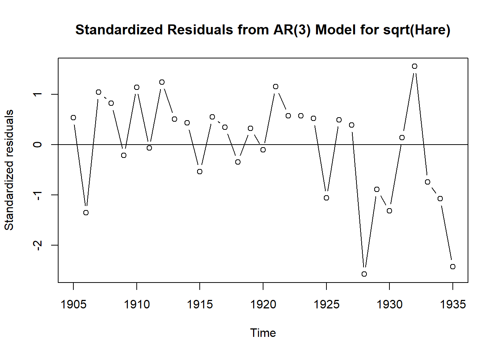
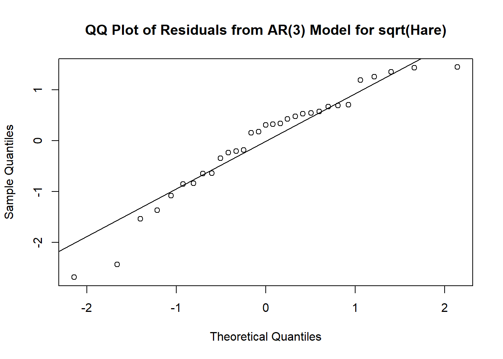
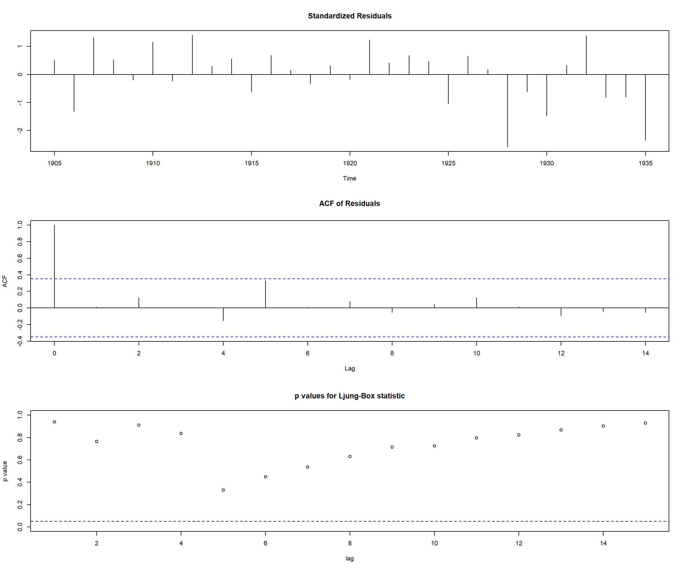
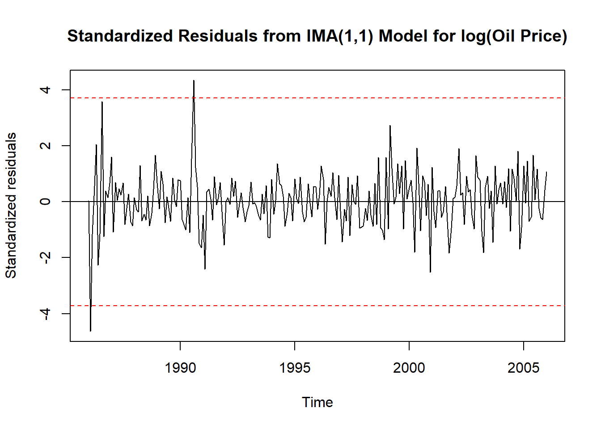
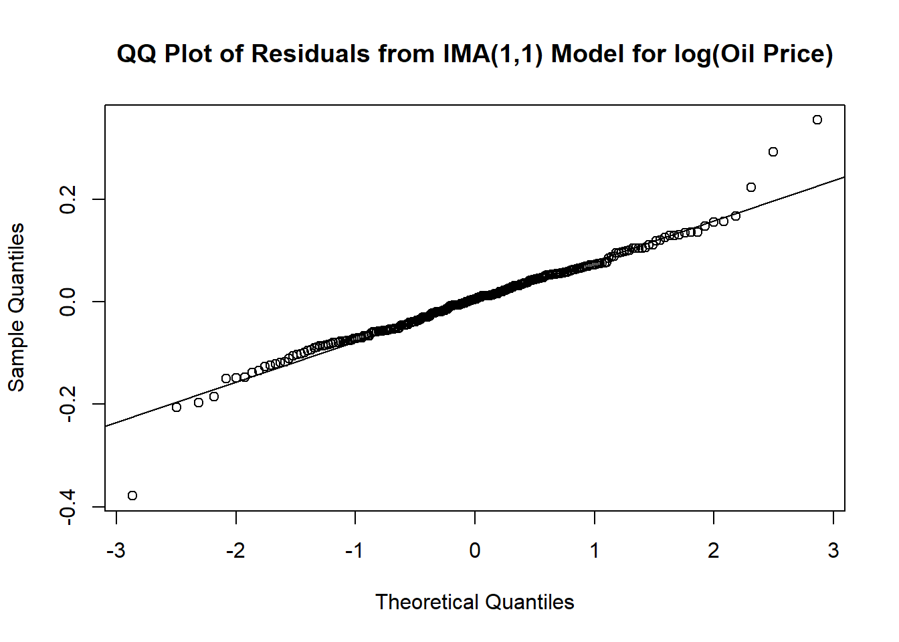
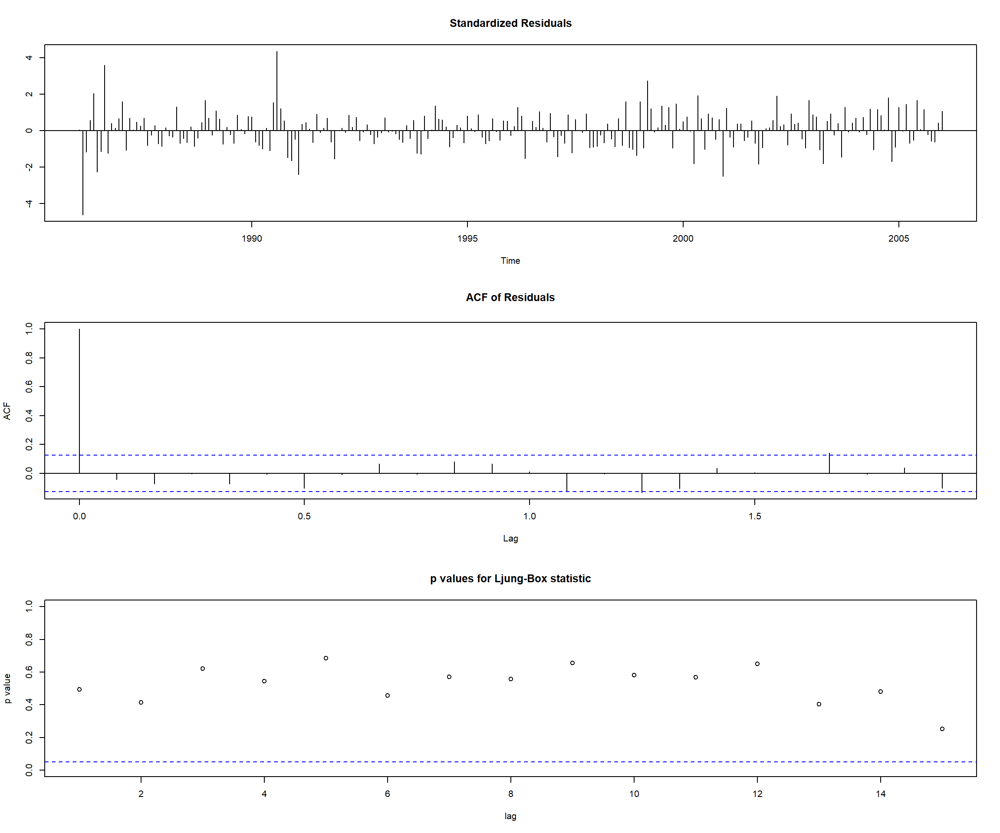

Code
# Load required packages
library(TSA)| Step 1: Model Specification | Step 2: Parameter Estimation | Step 3: Model Checking | Step 4: Forecasting |
This R notebook is based on Chapter 8, Cryer and Chan, Time Series Analysis with Applications in R, Springer.
# Load required packages
library(TSA)Two main approaches to model diagnostics are:
The residuals are the difference between the observed values and the fitted values from the model. The residuals should be white noise, i.e., they should not exhibit any autocorrelation or other patterns.
The residuals are calculated as follows: \[ \hat{e}_t = Y_t - \hat{Y}_t \] where \(Y_t\) is the observed value at time \(t\), and \(\hat{Y}_t\) is the fitted value at time \(t\). The fitted value is calculated as follows:
\[ \hat{Y}_t = \hat{\phi_0} + \hat{\phi}_1 Y_{t-1} + \hat{\phi}_2 Y_{t-2} + ... + \hat{\phi}_p Y_{t-p} \] where \(\hat{\phi_0}\) is the estimated intercept term, and \(\hat{\phi}_i\) are the estimated AR coefficients.
The residuals for MA and ARMA models are calculated using the inverted AR(\(\infty\)) representation of the model. The residuals are calculated as follows: \[ \hat{e}_t = Y_t - \hat{\pi}_1 Y_{t-1} - \hat{\pi}_2 Y_{t-2} - \hat{\pi}_3 Y_{t-3} - ... \] where \(\hat{\pi}_i\) are estimated implicitly as a function of the \(\hat\theta_i\) and \(\hat\phi_i\) coefficients.
In general, we have the following: \[ residual = actual - predicted \]
Residuals should be:
# Exhibit 8.1
data(color)
m1.color=arima(color,order=c(1,0,0), method = "ML")
m1.color
Call:
arima(x = color, order = c(1, 0, 0), method = "ML")
Coefficients:
ar1 intercept
0.5706 74.3293
s.e. 0.1435 1.9151
sigma^2 estimated as 24.83: log likelihood = -106.07, aic = 216.15plot(rstandard(m1.color),ylab='Standardized residuals',
type='b',
main = 'Standardized Residuals from AR(1) Model for Color Property')
abline(h=0)
qqnorm(residuals(m1.color), main='QQ Plot of Residuals from AR(1) Model for Color Property')
qqline(residuals(m1.color))
# Shapiro-Wilk test for normality, H0: normal, H1: not normal
shapiro.test(residuals(m1.color))
Shapiro-Wilk normality test
data: residuals(m1.color)
W = 0.97536, p-value = 0.6057To distinguish sample ACF of the time series from the sample ACF of the residuals we use the following notation: \[ \hat{r}_k = \text{sample ACF of the residuals},\qquad {r}_k = \text{sample ACF of $Y_t$} \]
Unfortunately, the sample autocorrelation function of residuals has a complex structure. We will compare residual ACF with the theoretical ACF of white noise, even though this is not entirely correct.
acf(residuals(m1.color),main='Sample ACF of Residuals from AR(1) Model for Color')
The Ljung-Box test is a statistical test that checks for the presence of autocorrelation as a whole in a time series. The null hypothesis of the test is that there is no autocorrelation in the residuals.
\[ H_0: \text{all residual ACF is zero for lags $k, k>0$}\quad\text{ vs }\quad H_1: \text{at least one residual ACF is not zero} \]
The test statistic for a specific parameter value \(K\) is given by: \[ Q = n(n+2)\sum_{k=1}^{h}\left[\frac{\hat{r}_1^2}{n-1}+\frac{\hat{r}_2^2}{n-2}+\ldots+\frac{\hat{r}_K^2}{n-K}\right]\sim \chi^2(K-p-q) \] where \(n\) is the number of observations, \(K\) is the number of lags, and \(\hat{r}_k\) is the sample autocorrelation of residuals at lag \(k\).
Here the maximum lag \(K\) is selected somewhat arbitrarily but large enough that the \(\psi\)-weights are negligible for \(j > K\).
library(stats)
Box.test(residuals(m1.color), lag=6, type="Ljung-Box", fitdf=1) # fitdf is the number of parameters in the model
Box-Ljung test
data: residuals(m1.color)
X-squared = 0.28032, df = 5, p-value = 0.998We can show all the diagnostics at once using the tsdiag function. The gof argument specifies the number of lags to be used in the Ljung-Box test.
tsdiag(m1.color,gof=15,omit.initial=F)
Recall, that the most appropriate model for the hare dataset is AR(3) model with \(\phi_2=0\) fitted to the square root of the data. The model is given by: \[ \sqrt{Y_t} = \phi_0 + \phi_1 \sqrt{Y_{t-1}} + \phi_3 \sqrt{Y_{t-3}} + e_t \] where \(\phi_0\) is the intercept term.
data(hare)
m1.hare=arima(sqrt(hare),order=c(3,0,0))
m1.hare # the AR(2) coefficient is not significant; it is second in the
Call:
arima(x = sqrt(hare), order = c(3, 0, 0))
Coefficients:
ar1 ar2 ar3 intercept
1.0519 -0.2292 -0.3931 5.6923
s.e. 0.1877 0.2942 0.1915 0.3371
sigma^2 estimated as 1.066: log likelihood = -46.54, aic = 101.08# list of coefficients.
m2.hare=arima(sqrt(hare),order=c(3,0,0),fixed=c(NA,0,NA,NA)) # fixed the AR(2)
# coefficient to be 0 via the fixed argument.
m2.hare
Call:
arima(x = sqrt(hare), order = c(3, 0, 0), fixed = c(NA, 0, NA, NA))
Coefficients:
ar1 ar2 ar3 intercept
0.9190 0 -0.5313 5.6889
s.e. 0.0791 0 0.0697 0.3179
sigma^2 estimated as 1.088: log likelihood = -46.85, aic = 99.69# Note that the intercept term is actually the mean in the centered form
# of the ARMA model, i.e. if Y(t)=sqrt(hare)-intercept, then the model is
# Y(t)=0.919*Y(t-1)-0.5313*Y(t-3)+e(t)
# So the "true" intercept equals 5.6889*(1-0.919+0.5313)=3.483, as stated in the book
plot(rstandard(m2.hare),ylab='Standardized residuals',
type='b',
main = 'Standardized Residuals from AR(3) Model for sqrt(Hare)')
abline(h=0)
# Bonferoni correction for the number of tests
alpha=0.05/length(hare) # Bonferroni correction for the number of tests
# critical value for the two-tailed test
qnorm(1-alpha/2) [1] 3.153563# Exhibit 8.5
qqnorm(residuals(m1.hare), main = 'QQ Plot of Residuals from AR(3) Model for sqrt(Hare)')
qqline(residuals(m1.hare))
# Shapiro-Wilk test for normality, H0: normal, H1: not normal
shapiro.test(residuals(m1.hare))
Shapiro-Wilk normality test
data: residuals(m1.hare)
W = 0.93509, p-value = 0.06043tsdiag(m1.hare,gof=15,omit.initial=F) 
Recall that the most appropriate model for the oil prices dataset is ARIMA(0,1,1) model, aka IMA(1,1) model, fitted to the \(\log Y_t\). The model is given by:
\[ \nabla \log(Y_t) = e_t - \theta e_{t-1} \] where \(\nabla \log(Y_t) = \log(Y_t) - \log(Y_{t-1})\) is the first difference of the data.
data(oil.price)
m1.oil=arima(log(oil.price),order=c(0,1,1))
m1.oil # IMA(1,1) model
Call:
arima(x = log(oil.price), order = c(0, 1, 1))
Coefficients:
ma1
0.2956
s.e. 0.0693
sigma^2 estimated as 0.006689: log likelihood = 260.29, aic = -518.58# Get standardized residuals
std_resid <- rstandard(m1.oil)
# Bonferroni-corrected alpha
alpha <- 0.05 / length(std_resid) # number of tests = number of residuals
crit <- qnorm(1 - alpha / 2)
# Plot
plot(std_resid, ylab = 'Standardized residuals', type = 'l',
main = 'Standardized Residuals from IMA(1,1) Model for log(Oil Price)')
abline(h = 0)
abline(h = crit, col = 'red', lty = 2)
abline(h = -crit, col = 'red', lty = 2)
# Exhibit 8.6
qqnorm(residuals(m1.oil), main = 'QQ Plot of Residuals from IMA(1,1) Model for log(Oil Price)')
qqline(residuals(m1.oil))
# Shapiro-Wilk test for normality, H0: normal, H1: not normal
shapiro.test(residuals(m1.oil))
Shapiro-Wilk normality test
data: residuals(m1.oil)
W = 0.96883, p-value = 3.937e-05Outliers seem to affect the normality of the residuals.
tsdiag(m1.oil,gof=15,omit.initial=F)
Our second diagnostic tool is overfitting. In other words, we can fit a more complex model to the data and check if the additional parameters are significant. If they are not, we can conclude that the simpler model is sufficient.
E.g., if an AR(2) model is fitted to the data, we can check if the AR(3) model is significantly better than the AR(2) model. The original AR(2) model is confirmed if
Let’s fit an AR(2) model to the color property dataset. The original suggested model is AR(1).
# Exhibit 8.13
m1.color
Call:
arima(x = color, order = c(1, 0, 0), method = "ML")
Coefficients:
ar1 intercept
0.5706 74.3293
s.e. 0.1435 1.9151
sigma^2 estimated as 24.83: log likelihood = -106.07, aic = 216.15# Exhibit 8.14
m2.color=arima(color,order=c(2,0,0))
m2.color
Call:
arima(x = color, order = c(2, 0, 0))
Coefficients:
ar1 ar2 intercept
0.5173 0.1005 74.1551
s.e. 0.1717 0.1815 2.1463
sigma^2 estimated as 24.6: log likelihood = -105.92, aic = 217.84We can alternatively fit an ARMA(1,1) model to the data. The original suggested model is AR(1).
# Exhibit 8.15
m3.color=arima(color,order=c(1,0,1))
m3.color
Call:
arima(x = color, order = c(1, 0, 1))
Coefficients:
ar1 ma1 intercept
0.6721 -0.1467 74.1730
s.e. 0.2147 0.2742 2.1357
sigma^2 estimated as 24.63: log likelihood = -105.94, aic = 217.88For AR(2) and ARMA(1,1) models, the estimates of \(\phi_2\) and \(\theta\) are not significantly different from zero. The estimates of \(\phi_1\) are not significantly different from the estimates of \(\phi_1\) from the original AR(1) model.
Any ARMA(\(p,q\)) model can be expressed as an unidentifiable ARMA(\(p+1,q+1\)) model. \[ \Phi(B)Y_t=\Theta(B)e_t \]
Multiplying both sides by \((1-cB)\) for any constant \(c\) gives us an ARMA(\(p+1,q+1\)) model: \[ (1-cB)\Phi(B)Y_t=(1-cB)\Theta(B)e_t \]
Parameters in this model are not unique (we can take any \(c\)), and thus are not identifiable.
Follow the rules of a good Time Series Analyst:
The original suggested model is AR(1). Let’s fit an ARMA(2,1) model to the data.
# Exhibit 8.16
m4.color=arima(color,order=c(2,0,1))
m4.color
Call:
arima(x = color, order = c(2, 0, 1))
Coefficients:
ar1 ar2 ma1 intercept
0.2189 0.2735 0.3036 74.1653
s.e. 2.0056 1.1376 2.0650 2.1121
sigma^2 estimated as 24.58: log likelihood = -105.91, aic = 219.82Even though AIC values are close to the original AR(1) model, the estimates of \(\phi_1, \phi_2, \theta\) are not significantly different from zero.